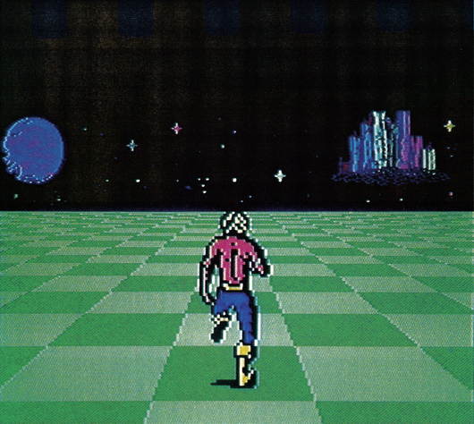
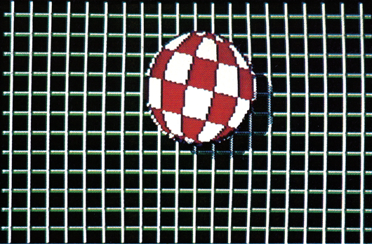
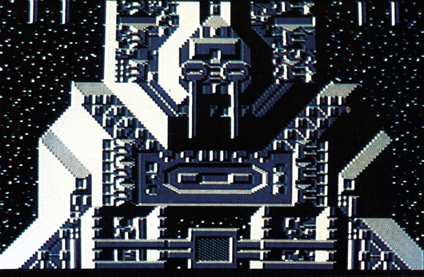
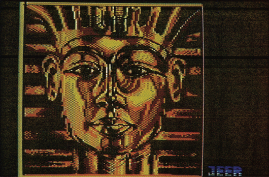
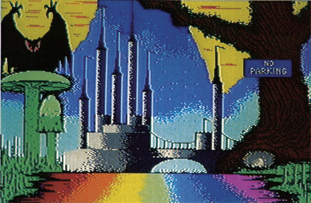

Auflösung des Grafik-Wettbewerbs
Auflösung des alten und Start eines neuen Grafik-Wettbewerbs. Machen Sie mit. Wir suchen das schönste Farbbild auf dem C 64, das mit einem Malprogramm machbar ist.
Es ist soweit: Die Gewinner des Wettbewerbs »Bewegte Grafik« aus Ausgabe 6/86 stehen fest!
Nach tage- und nächtelangem Begutachten der über 200 Einsendungen konnte die Redaktion die Gewinner ermitteln. Den ersten Platz erzielte Martin Brenner aus Neu-Ulm mit seinem Programm »Pacer« (Bild 1). Eine gelungene Umsetzung einer Sequenz aus einem Spielhallen-Automaten mit fließenden Bewegungsabläufen. Wir gratulieren ihm zu seinem Gewinn in Höhe von 1000 Mark.

Es erreichten uns Dutzende von Amiga-Bällen. Den gelungensten von allen haben wir auf Platz 2 gesetzt (Bild 2). Martin Gräfe aus Schwerte baute noch einige Effekte in seinen Ball ein, die ihn von den anderen abhoben. Sein Preis: 200 Mark.

Mit »Megamove II«, einem sehr detaillierten Riesenraumschiff, das über sieben Bildschirmseiten scrollt, wurde Manfred Trenz aus Saarbrücken dritter Sieger. Er erhielt 100 Mark. In Bild 3 sehen Sie einen Ausschnitt. Die optimale Wirkung erzielt das Programm im Ablauf der sieben Bildschirmseiten umfassenden Gesamtgrafik.

Da die Listings zu lang zum Abtippen sind, haben wir alle drei Siegerbilder mit auf die Programmservice-Diskette gepackt.
Zum Abschluß der Wettbewerbsauflösung noch eine Information am Rande: Jesko Schwarzer aus Frechen schickte uns ebenfalls ein Programm für den Wettbewerb ein. Wir fanden seinen »3D-Grafik-Master« aber so gut, daß wir das komplette Programm kurzerhand zum »Listing des Monats« machten. Sie können es im Listingteil dieser Ausgabe finden.
Lassen Sie sich also von Jesko Schwarzers Treffer animieren, bei unseren Wettbewerben mitzumachen. Denn: jeder kann gewinnen...
Ein neuer Wettbewerb
Das neue Motto: »Die schönsten Multicolor-Bilder«. Der ausgesetzte Preis: insgesamt 2000 Mark
Ein neuer Wettbewerb, bei dem wieder jeder mitmachen kann! Wir suchen die schönsten Multicolor-Grafiken. Die einzige Bedingung: Keine reinen (schwarzweißen) HiRes-Bilder. Es bleibt Ihnen überlassen, mit welchem Malprogramm (Blazing Paddles, Koalapainter, etc.) Sie Ihre Bilder erstellen. Es sind alle zugelassen, unabhängig davon, ob sie heute noch im Handel erhältlich sind oder nicht. Eine Bitte nur: Schreiben Sie dazu, mit welchem Programm das Bild erstellt wurde.
Sie können alles malen, was Ihnen gerade in den Sinn kommt. Sei es nun ein Gemälde wie die goldene Maske der Pharaonen (Bild 4) oder eine faszinierende Landschaft (Bild 5).


Wir möchten beweisen, daß der C 64 mit »nur« 160 mal 200 Punkten Auflösung (im Multicolor-Modus) immer noch zu einem der besten Grafik-Computer gehört, die im Heim-Computer-Bereich angeboten werden.
Deshalb also: Machen Sie mit, gewinnen Sie mit. Wenn genug tolle Bilder zusammenkommen, denken wir sogar daran, eine Bildershow auf Diskette herauszugeben. Die Künstler der auf dieser Diskette enthaltenen Grafiken bekommen dann natürlich ebenfalls eine Prämie.
Senden Sie uns Ihre Bilder bitte auf Datenträger bis spätestens 10. Januar 1987 (Datum des Poststempels) an folgende Adresse:
Markt & Technik Verlag AG Redaktion 64'er
Kennwort: Das schönste Bild z. Hd. Herrn Dieter Mayer Hans-Pinsel-Straße 2 8013 Haar bei München